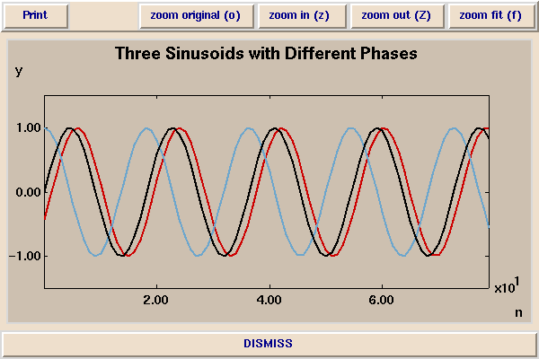
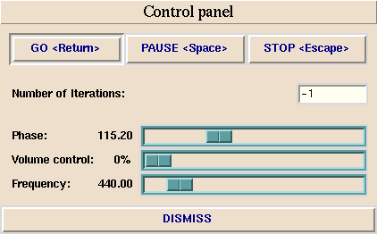

This demonstration shows three sinusoids of different frequencies. The black and blue sinusoids have a 90 degree (PI/2 radian) phase difference between them.

The phase of the red sinusoid is controlled by a slider in the control panel:

The frequency of all the sinusoids are also controlled by a slider. By default, the frequency is set to 440 Hz, which is the frequency of the musical note A above middle C.